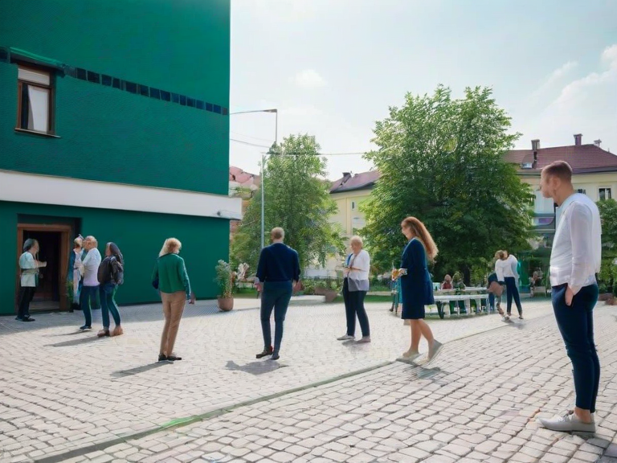
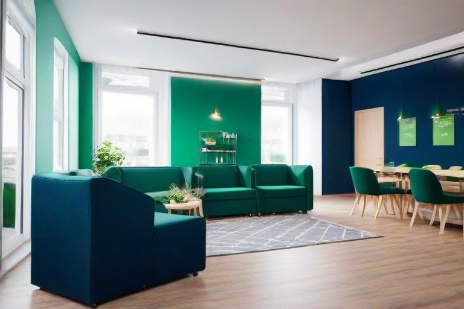
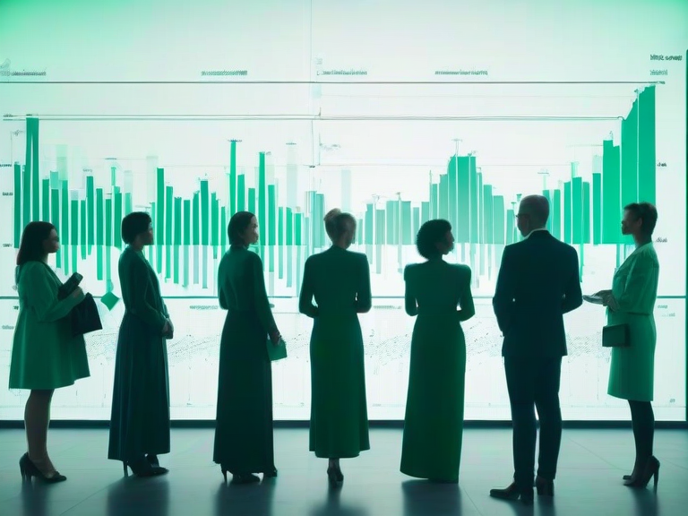
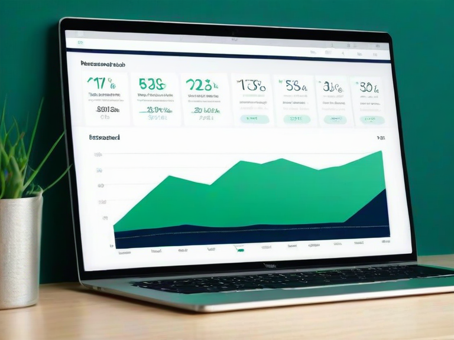
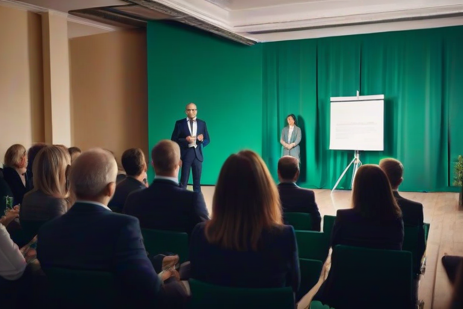
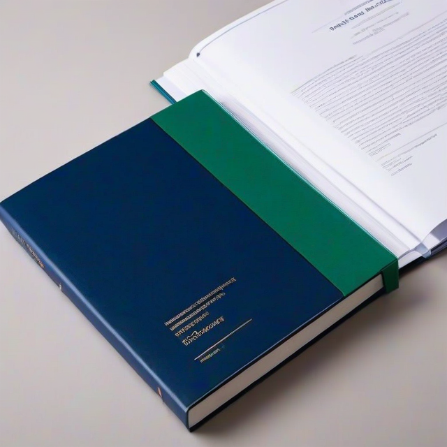

Premium wizerunek dla nowoczesnej organizacji społeczno-edukacyjnej: elegancka narracja, czytelna transparentność, silna ekspozycja projektów i profesjonalne narzędzia do współpracy z partnerami, grantodawcami i darczyńcami.

Sekcja powinna łączyć narrację społeczną z profesjonalnym wizerunkiem organizacji. Treść pokazuje sens działania, kompetencje zespołu oraz skalę wpływu. Układ premium opiera się na klarownych blokach treści, zdjęciach o wysokiej jakości i wyważonej typografii.
Programy szkoleniowe, warsztaty, mentoring oraz inicjatywy wspierające rozwój społeczny, zawodowy i obywatelski.
Działania dla seniorów, osób z niepełnosprawnościami, rodzin, cudzoziemców i osób zagrożonych wykluczeniem.
Projekty z obszaru promocji zdrowia, współpracy międzysektorowej oraz inicjatyw rozwojowych o wysokiej wartości społecznej.
Kompleksowy program szkoleń, doradztwa i aktywizacji dla mieszkańców regionu, realizowany z partnerami publicznymi i społecznymi.

Cykl działań integracyjnych, animacyjnych i konsultacyjnych dla grup wymagających dedykowanego wsparcia.
Przestrzeń testowania nowych rozwiązań edukacyjnych i społecznych z udziałem ekspertów, praktyków i partnerów lokalnych.


Sekcja premium powinna subtelnie, ale skutecznie tłumaczyć, jak można wesprzeć fundację: finansowo, rzeczowo, ekspercko lub partnersko. CTA musi być jasne, a formularz prosty i bezpieczny.
Aktualności powinny być przedstawione jako starannie zaprojektowane karty redakcyjne. Wizerunek premium wymaga jakościowych zdjęć, spójnych nagłówków i przejrzystej narracji informacyjnej.

To kluczowy blok dla fundacji. Powinien zawierać dokumenty formalne, dane rejestrowe, informacje o zarządzie, zasadach przetwarzania danych oraz przejrzyste ścieżki pobierania materiałów PDF.

Ostatnia sekcja powinna zbierać wszystkie ścieżki kontaktu: formularz, dane fundacji, adres, e-mail, telefon, social media i zaproszenie do współpracy przy projektach, badaniach oraz działaniach edukacyjnych.